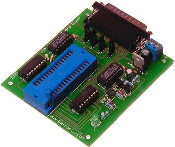
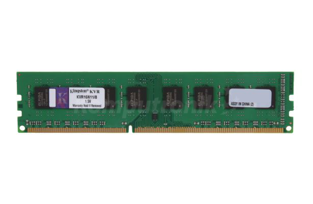

a)Pamięć wewnętrzna
*Pamięć ROM

Pamięć tylko do odczytu, ROM (od ang. read-only memory) – pamięć półprzewodnikowa urządzenia elektronicznego, w szczególności komputera, z której dane można tylko odczytywać, natomiast zapis jest niemożliwy albo może wymagać dodatkowych czynności lub sprzętu (na przykład programatora).
"https://pl.wikipedia.org/wiki/Pami%C4%99%C4%87_tylko_do_odczytu"
*Pamięć RAM
RAM (od ang. random-access memory), pamięć o dostępie swobodnym – podstawowy rodzaj pamięci cyfrowej. Choć nazwa sugeruje, że jest to każda pamięć o bezpośrednim dostępie do dowolnej komórki pamięci (w przeciwieństwie do pamięci o dostępie sekwencyjnym, na przykład rejestrów przesuwnych), ze względów historycznych oznacza ona tylko te rodzaje pamięci o bezpośrednim dostępie, w których możliwy jest wielokrotny i łatwy zapis, a wyklucza pamięci ROM (tylko do odczytu) i EEPROM, w których zapis trwa znacznie dłużej niż odczyt, mimo że w ich przypadku też występuje swobodny dostęp do zawartości[1]."https://pl.wikipedia.org/wiki/RAM"

-
Producent--Kingston
Gwarancja--Gwarancja dożywotnia
rodzaj pamięci--DDR3 DIMM
standard--DDR3-1600 (PC3-12800)
pojemność pojedynczego modułu--8 GB
przepustowość--12800 MB/s
częstotliwość pracy--1600 MHz
opóźnienie - cycle latency--11
timingi-- 11-11-11
b)Pamięć zewnętrzna
*Dysk twardy

Dysk twardy, napęd dysku twardego, HDD (z ang. hard disk drive) – pamięć masowa wykorzystująca nośnik magnetyczny do przechowywania danych. Nazwa „dysk twardy” wynika z zastosowania twardego materiału jako podłoża dla właściwego nośnika, w odróżnieniu od dysku miękkiego, w którym nośnik magnetyczny nanoszono na podłoże elastyczne
"https://pl.wikipedia.org/wiki/Dysk_twardy"
Producent--Hitachi
Gwarancja--3 lata w serwisie zewnętrznym
format szerokości--3.5 cala
pojemność--6000 GB
interfejs--Serial ATA III
pamięć cache--128 MB
prędkość obrotowa--7200 obr./min.
niezawodność MTBF--1000000 godz.
wysokość--146 mm
długość--26.1 mm
waga--840 g